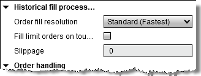
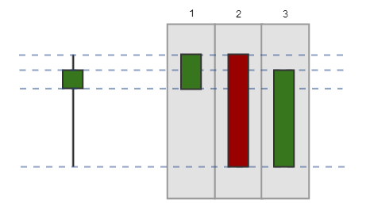
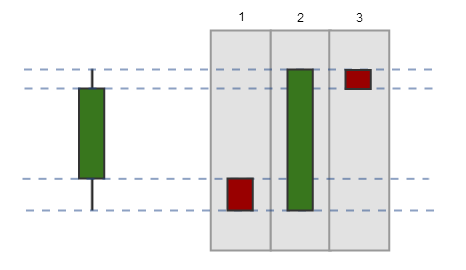

|
<< Click to Display Table of Contents >> Understanding Historical Fill Processing |


|
Understanding Historical Fill Processing
|
<< Click to Display Table of Contents >> Understanding Historical Fill Processing |
|
NinjaTrader uses advanced historical fill processing methods and techniques to get the most realistic results possible on historical backtests.
Our Historical Fill Algorithm will run on existing data that you are backtesting and simulate historical orders using the method descibed below in "Understanding the Historical Fill Algorithm". You can optionally choose to bring in a secondary data series to be used to get more granular fill on orders and is explained in the section "Understanding Order Fill Resolution
 Understanding the Historical Fill Algorithm
Understanding the Historical Fill Algorithm
Historical Fill AlgorithmNinjaTrader provides two options to control the granularity of historical order fill processing: Standard and High. The Standard order fill resolution uses an algorithm to break each historical bar into three virtual bars to mimic the movement of price within each bar's timeframe. The virtual bars are created based on the proximity of the Open price to the High and Low prices. This provides more realistic intra-bar fills compared to traditional backtesting algorithms which only use static OHLC values.

The Standard setting creates virtual bars according to the following logic:
When the Open price of the bar is closer to the High price than the Low price:
1. Open price to the High price 2. High price to the Low price 3. Low price to the Close price  When the Open price of the bar is closer to the Low price than the High price:
1. Open price to the Low price 2. Low price to the High price 3. High price to the Close price 
SlippageSlippage can be added to your order fills to help mimic real market conditions. The value is expressed in "ticks", the minimum value of fluctuation for an instrument, and is only applied to market, stop-market and Market-if-touched orders. NinjaTrader will add the slippage to each order however you cannot have more slippage then the high/low price of the next bar. |
 Understanding order fill resolution
Understanding order fill resolution
Order Fill ResolutionNinjaTrader allows you to pull in additional historical data that will be more granular than what you are using for the strategy backtest to be used to give you more data points of which to fill orders. Allowing for more accuracy in the order fill simulation.
Order fill resolution of "Standard (Fastest)" is the default setting and will use the existing bar type and interval that you are running the backtest on to fill your orders. This means that the historical fill algorithm will use the same Open, High, Low, Close, Time values that are available to the strategy for running the order fill simulation.
Selecting order fill resolution of "High" will allow you to set a secondary bar series to be used as the price data to fill your orders, this allows you to bring in more granular data then you are currently running the strategy on. For example you may have a strategy that you run on "Daily" bars but then want to bring in "Minute" bars for the historical fill algorithm to be based on.
The secondary bar series will mimic the 'price based on' setting in your Strategy Analyzer settings, should you wish to mix different prices types, for example generate signals of last based data and execute those to a bid / ask series, this could be achieved with further custom programming.
|